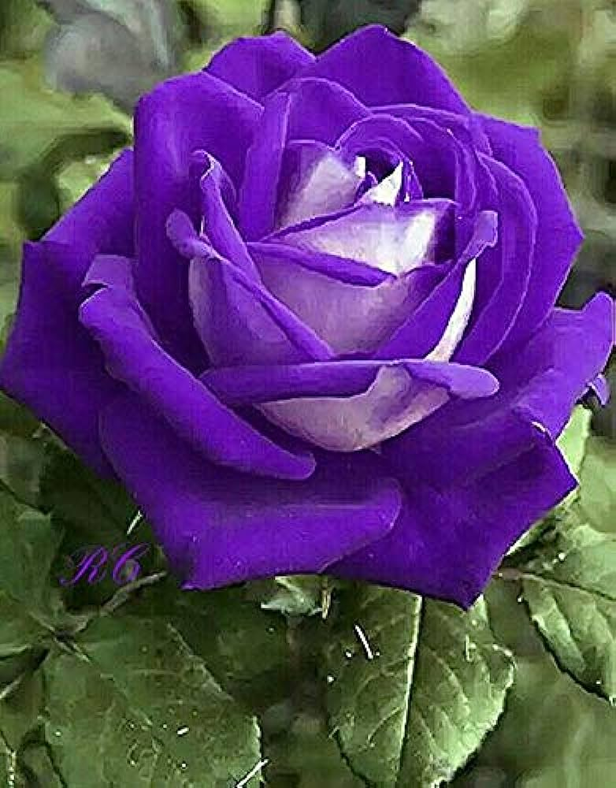
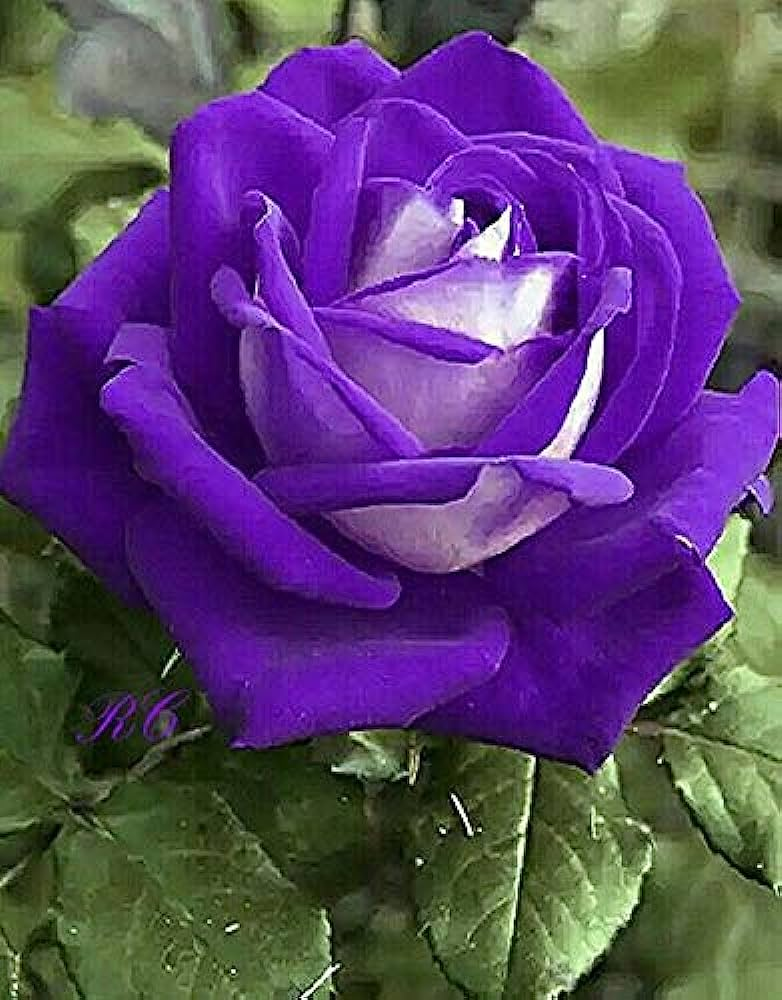

Hello world !
To Do
Buy some Cookies
Varietis of
Rose

Google Search
Read more
Rose
 



A rose is either a woody perennial flowering plant of the genus Rosa, in the family Rosaceae, or the flower
it bears. There are over three hundred tens of thousands of cultivars.Most species are native to Asia
The
aggregate fruit of the rose is a berry-like structure called a rose hip. Many of the domestic cultivars do not
produce hips, as the petalled that they do not provide access for pollination.
The sharp growths along a
rose stem, though commonly called "thorns",
are technically prickles, outgrowths thorns, which are modified
in the family Rosaceae,
or the flower it bears. There are over three hundred species and tens of
thousands
of cultivars. stems